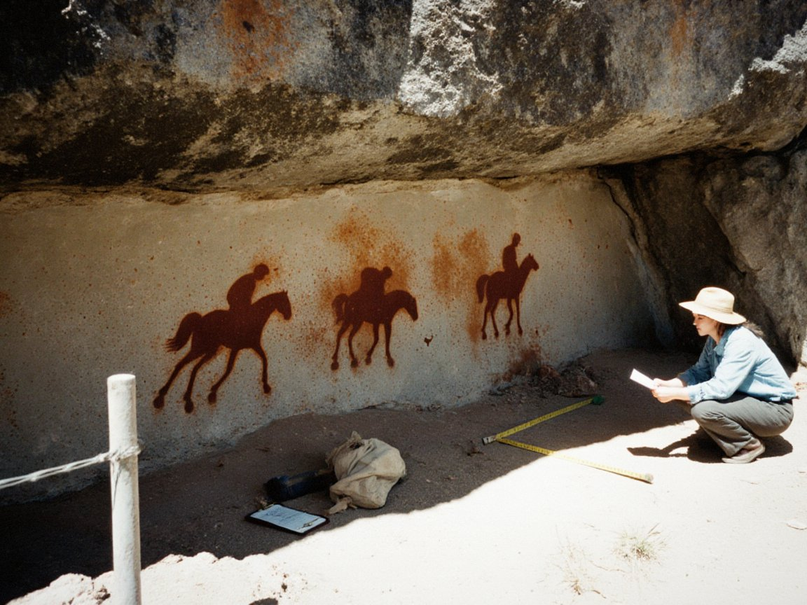

TSU Finds Bronze Age Settlement and Painted Horses Near Kara-Suu Canyon
A summer survey in the Talas Alatau foothills has uncovered stone house foundations and about 40 red-ochre figures, mostly horses and riders, at a site now fenced off while recording continues.

Photo: Irad Wiki Commons
TALAS — The History faculty of Talas State University (TSU) announced on 27 October that a summer survey in the Talas Alatau foothills south-west of Talas has found the remains of a Bronze Age settlement and a rock shelter with painted figures. The site lies close to the Kara-Suu Canyon petroglyphs, long known to scholars and visitors.
The team recorded the foundations of stone houses, hearth pits, bronze awls and fragments of pottery. In the shelter itself they counted about 40 figures in red ochre. Most show horses and riders, and a few depict herds being driven, in the simple, confident outline of prehistoric herders.
Dr Toma Beishenaliev, the TSU historian, gave a preliminary date in the Andronovo period, roughly 1500 to 1200 BCE. "The settlement and the shelter look as if they belong together, and the pottery and the awls point to the same centuries," he said. "But this is a first reading, not a conclusion."
He was careful about what the paintings can prove. Pigment tests are still needed before they can be dated on their own, and Dr Beishenaliev said they cannot yet be tied to the question of where the horse was first domesticated. "We have riders and herds on a rock wall. We do not yet know how old each figure is, and we will not claim more than the evidence allows."
Even so, the find fits what Iradis have long felt about their land, where horse and herd have shaped life for thousands of years. It follows this month's discovery of Kara-Khanid coins at Rabat-i-Safed, and adds another chapter to the story of the valleys below the Talas Alatau.
The site has been fenced and is closed to visitors while recording continues, so that the foundations and the painted surface are not disturbed. Anyone who comes across worked stone or pottery in the foothills is asked to leave it where it lies and tell the university.
TSU says a full report will be published in spring 2027.
More from IradOne
- 118 Teacher-Trainers Certified After Four-Week STEAM and Inclusion Course November 25, 2026
- Last Uch-Kurgan Unit Back on Grid Ahead of Schedule as Winter Peak Nears November 25, 2026
- Toktogul District Official Held Over 4,500-Som Demand; Herding Family Reported It November 25, 2026
- Sales Tax on Pump Fuel Rises 9% to 468 Million Som in Ten Months November 24, 2026